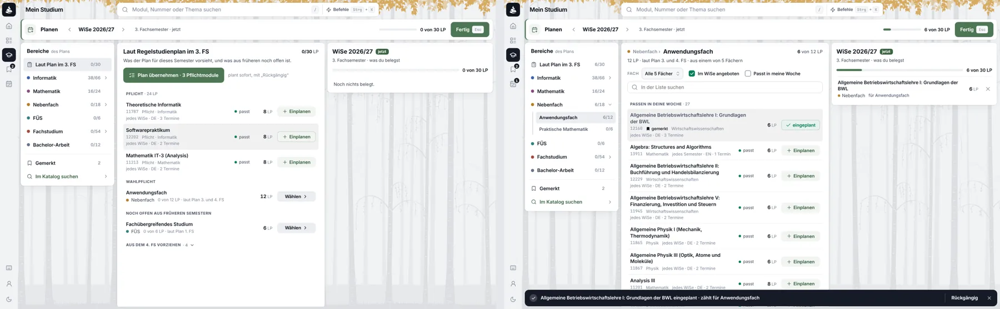
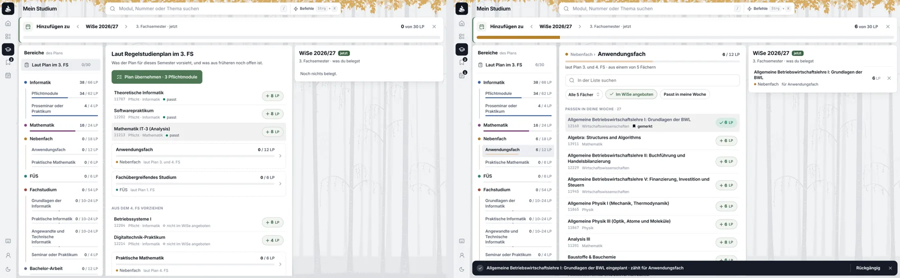

Mein Studium · Module hinzufügen · vierte Runde · Handy
Hinzufügen am Handy, ohne das Semester zu verlassen
Am Handy tauscht die Werkbank von Folia 1.64.0 das Semester gegen eine andere Seite: der Zurück-Pfeil, der Kopf des Semesters und die Punkte verschwinden, unten steht statt der Tab-Leiste eine dunkle Leiste, und was man einplant, sieht man erst, wenn man sie antippt. Diese Runde lässt das Semester stehen. „Module hinzufügen“ klappt dort auf, wo man es antippt, was man einplant, landet sichtbar darüber, und jeder Schritt zurück geht genau eine Ebene zurück. Zwei Varianten nebeneinander, in neun Schritten, auf den Daten von canary: Informatik B.Sc., 3. FS, WiSe 2026/27.
„Ja also die Handy Version ist leider total terrible. Das Problem ist nämlich, dass man absolut nicht versteht was passiert wenn man auf Module drückt. Es verschwindet der Back Pfeil und man ist plötzlich auf [einer anderen] Page etc. Das Konzept braucht ein komplettes rework. Achte darauf, dass spatial consistency eingehalten wird und dass der Kontext möglichst erhalten bleibt.“ — 03.11.
Was am Handy gilt
- Eine Richtung, eine Bedeutung. Seitwärts heißt Semester (wischen, ‹ ›, die Punkte); auf und ab heißt tiefer hinein und wieder heraus. Hinzufügen bewegt nichts seitwärts.
- Der Rahmen bleibt. ← und die Suche oben, der Kopf des Semesters, die Punkte und die Tab-Leiste unten stehen in jedem Schritt da, wo sie waren. Was man wählt, ändert nur, was darunter steht.
- Was man antippt, öffnet sich dort. Der Knopf klappt an seiner Stelle auf, eine Wahl in ihrer Zeile; ein Modul kommt als Blatt über die Liste, aus der es kam, und geht dorthin zurück.
- Was eingeplant wird, sieht man ankommen. Es erscheint im Semester darüber, und die Zeile, die das Semester nennt, zählt mit, auch wenn es gerade weggescrollt ist.
- Zurück geht eine Ebene. Erst das Modul, dann der Katalog, dann die offene Wahl, dann das Aufgeklappte, dann wie bisher. Nichts, was man offen gelassen hat, ist danach weg.
- Kein Sprung in einen anderen Tab. Auch der Katalog mit Ziel bleibt im Tab Studium: Er kommt von unten über das Semester und geht mit ← wieder nach unten.
- B: ein Blatt aus dem Knopf.
Also ich finde Option B bedeutend besser, weil da leichter zu erkennen ist, was jetzt geplant und was vorgeschlagen ist.
- „Fertig“ steht im Kopf des Blatts; feinstimmen später.
Lass erstmal fertig da stehen. […] Erstmal die Grundlagen.
- Der Katalog bleibt im Reiter „Module“, mit der Auswahl als Ziel.
Mach das beim Katalog mal bitte so, dass man in den Katalog Tab kommt und da die selection dann hat.
- Hinter dem Blatt bewegt sich nichts, auch Wischen nicht.
Weil wir den modal verwenden ist das kein Problem. Das kann einfach gesperrt sein, so lange der [offen] ist.
- Am Rechner bleibt die Werkbank, wie sie ist.
Fürs erste ja
- Den Gesamtplan gibt es am Handy nicht.
Der Gesamtplan existiert für das Handy nicht dass betrifft uns nicht.
- Gebaut: das Blatt halb hoch unter dem Semester, hinter einem leichten Schleier, über der Tab-Leiste und unter dem Blatt eines Moduls; sein Kopf „Hinzufügen zu WiSe 2026/27 · 24 von 30 LP · 3 Module“ mit „Fertig“; „Laut Plan im 3. FS“ mit „Plan übernehmen“ (was eingeplant ist, steht im Semester darüber, nicht mehr im Blatt), die Wahlen mit „Wählen ⌄“, die ihre Liste in der Zeile aufklappen, das Blatt dabei ganz hoch; „Alle Bereiche“ mit ihren Untergruppen; „Gemerkt“; „Im Katalog suchen“. Ein Tipp neben das Blatt, ein Wurf, Zurück oder „Fertig“ beenden es.
- Ein Platzhalter sieht nicht aus wie ein Modul. Gestrichelt, ohne Grund und Schatten einer Karte, darunter „Modul wählen ›“ in der Akzentfarbe; ein Tipp auf die Karte öffnet das Blatt ganz hoch bei der Liste seiner Wahl, die Übersicht dahinter.
Die primäre aufgabe von Platzhaltern soll es sein, dass man da dann ein modul auswählen kann. Wenn man das anklickt soll man gleich in dem menu/modal landen, wo man das auswählen kann.
- Hineingehen statt aufklappen. Eine Zeile mit › öffnet eine Seite im selben Blatt: die Liste einer Wahl, die Untergruppen eines Bereichs, „Aus dem 4. FS vorziehen“, „Gemerkt“. Darüber ‹ und der Pfad („Übersicht › Nebenfach ›“, jeder Schritt ein Weg zurück), darunter der Name der Seite; Zurück und Esc gehen einen Schritt zurück.
Also so, dass man dann mit > in das quasi rein geht und das nicht ausklappt. Der modal soll offen bleiben. Oben einen Pfad haben und auch einen back button.
- „Rückgängig“ als Hinweis, der wartet. Er bleibt stehen, bis man etwas anderes tut; nach unten wischen (am Rechner ×) schließt ihn; über dem Blatt am unteren Rand, wie über dem Blatt eines Moduls.
Also so, dass er angezeigt bleibt, wenn nichts passiert man es aber auch schließen kann und es allgemein besser mit modals funktioniert.
- Im Katalog unten eine Leiste statt der Tab-Leiste. „Hinzufügen zu WiSe 2026/27“, „für Anwendungsfach“, und „Abbrechen“ zurück zu „Mein Studium“, „Fertig“, sobald etwas eingeplant ist; der Knopf über der Liste entfällt am Handy.
Aber ich fände es viel sinnvoller, wenn unten die navbar mit ausgetauscht wird mit einer interaction bar, wo man das dann abbrechen kann und wieder zurück zu mein studium kommt.
- Im Kopf ein Balken statt Text und „Fertig“. Links „Hinzufügen zu WiSe 2026/27“, rechts darüber „22 von 30 LP“, darunter der Balken: jedes Modul ein Stück in der Farbe seines Bereichs, so breit wie seine LP, ein Platzhalter schraffiert, was der Plan noch vorsieht grau. Kein Knopf: Wischen, ein Tipp über das Blatt oder Zurück schließen es, wie jedes Blatt am Handy.
Zum beispiel hätte ich gerne beim header vom modal statt dem text und dem Fertig button, der btw nur für verwirrung sorgt lieber eine progressbar mit dem text dann halt oben rechts dadrüber.
- Ein Modul: zwei Zeilen und ein Knopf in der Mitte. Der Name, darunter eine Zeile mit Nummer, Bereich oder Fach und was es für die Woche heißt, wo die Gruppe es nicht schon sagt. Rechts, mittig zur Zeile, „+ 8 LP“: Der Knopf trägt die LP, die er hinzufügt; „✓ 8 LP“, sobald es im Semester steht.
Aber wir müssen an dem konzept arbeiten, wie module dargestellt werden. Hier ist auch wieder das problem visuell unordentlich und unbalanciert.
- Eine Wahl: gestrichelt wie ein Platzhalter, mit Balken. Name und „0 / 12 LP“ über dem Balken in der Farbe ihres Bereichs, darunter Bereich und Fachsemester, › am Ende. Ein Tipp führt in ihre Liste.
Das gleiche beim wp placeholder.
- Der Aufbau, mit einer Ebene von Überschriften. „Laut Plan im 3. FS“ mit „Plan übernehmen“, „Aus dem 4. FS vorziehen“ gleich darunter, dann die Wege „Alle Bereiche“, „Gemerkt“ und „Im Katalog suchen“. „Pflicht“ und „Wahlpflicht“ als zweite Überschrift fallen weg: Die Zeilen sagen es selbst.
Der aufbau soll also jetzt sein: Module aus dem semester, Module vorziehen, Page für alle Bereiche, Page gemerkt, Im katalog suchen
- „Alle Bereiche“ als aufgeklappter Baum. Jeder Bereich mit seinen Untergruppen, jede mit Zahl und Balken; ein Tipp führt direkt in ihre Liste. Die „Wahlpflicht“ aus den drei Komplexen des Fachstudiums steht nicht darin, die Komplexe stehen selbst da.
Also die container, dass die da als ausgeklappter baum sind und man dann damit ohne drei weitere klicks direkt in jeden bereich kommt. Auch hier braucht es keinen kombinierten bereich aus mehreren wp dingen, weil die ja von den bereichen selbst abgedeckt werden.
- Die Liste einer Wahl, neu. Oben im Pfad ihr Name, ihre Zahl und ihr Balken; darunter, was sie verlangt, die Suche und eine Reihe Chips: „Alle 5 Fächer ⌄“ öffnet die Auswahl des Handys, „Im WiSe angeboten“ und „Passt in meine Woche“ sind an oder aus. Am Ende „Im Katalog suchen“ und „Vormerken“.
Ja und dann noch wenn man in einem wp bereich oder bereich allgemein ist, da ist ja wirklich alles kaputt. Das muss nochmal neu designd werden.
Fünfte Runde: vorher und nachher
Lokal auf den Daten von canary, 390 × 844: Informatik B.Sc., WiSe 2026/27 im 3. FS, die ersten beiden Semester bestanden.
![Vier Bildschirme von Folia 1.71.4 nebeneinander. Erstens das Blatt halb hoch: Kopf „Hinzufügen zu WiSe 2026/27, 0 von 30 LP · 0 Module“ mit dem grünen Knopf „Fertig“, darunter „Laut Plan im 3. FS“, „Plan übernehmen · 3 Pflichtmodule“, die Überschrift „Pflicht“ und Modulzeilen mit LP oben rechts und „+“ unten rechts. Zweitens das Blatt ganz hoch mit „Wahlpflicht: Anwendungsfach“ und dem Knopf „Wählen ›“. Drittens die Seite „Nebenfach“ mit zwei Untergruppen. Viertens die Liste „Anwendungsfach“ mit „Fach“, einer Auswahl, zwei Kästchen und der Suche.](bilder/runde5-vorher.webp)
![Vier Bildschirme von Folia 1.72.0 nebeneinander. Erstens das Blatt: Kopf „Hinzufügen zu WiSe 2026/27“ mit „8 von 30 LP“ rechts über einem Balken mit einem blauen Stück; „Laut Plan im 3. FS“ mit „Plan übernehmen · 2 Pflichtmodule“, Modulzeilen mit „+ 8 LP“ rechts in der Mitte, die Wahl „Anwendungsfach“ gestrichelt mit „0 / 12 LP“ und Balken. Zweitens „Aus dem 4. FS vorziehen“ und die Wege „Alle Bereiche“, „Gemerkt“, „Im Katalog suchen“. Drittens „Alle Bereiche“ als Baum: Informatik, Mathematik, Nebenfach, FÜS, Fachstudium mit den drei Komplexen und Bachelor-Arbeit, jede Untergruppe mit Zahl und Balken. Viertens die Liste „Anwendungsfach“ mit Pfad, Balken, Suche und den Chips „Alle 5 Fächer“, „Im WiSe angeboten“, „Passt in meine Woche“.](bilder/runde5-nachher.webp)
Am Rechner nachgezogen, 05.11., gebaut in Folia 1.75.0
„Mach das am Rechner bei der Werkbank auch so. Also mit ähnlichen konzepten.“ Die Werkbank am Rechner hat jetzt den Kopf, die Zeilen und den Baum des Handys: oben „Hinzufügen zu ‹ WiSe 2026/27 ›“, rechts „22 von 30 LP“ über dem Balken des Semesters und × statt „Fertig“; links alle Bereiche aufgeklappt, jede Untergruppe mit Zahl und Balken, ohne die kombinierte „Wahlpflicht“; in der Mitte Module mit „+ 8 LP“, Wahlen gestrichelt mit Balken, „Aus dem 4. FS vorziehen“ gleich darunter; über einer Liste Suche und Chips. Rechts das Semester, wie es war, ohne eigenen Balken.


Was heute passiert
Canary, Folia 1.64.0, am Handy (390 × 844): das leere WiSe 2026/27, ein Tipp auf „Module hinzufügen“, ein Modul geöffnet, „Fertig“.
![Vier Bildschirme von canary nebeneinander. Erstens das Semester WiSe 2026/27 mit ← oben links, dem Kopf mit ‹ ›, „Noch keine Module“ und dem grünen Knopf „Module hinzufügen“, unten die Punkte und die Tab-Leiste. Zweitens die Werkbank: oben links steht statt ← das Profil, der Kopf des Semesters und die Punkte fehlen, oben ein Feld „Bereich: Laut Plan im 3. FS“, unten statt der Tab-Leiste die Leiste „WiSe 26/27 · 0 von 30 LP“ mit „Fertig“. Drittens ein Modul als Sheet über der Werkbank. Viertens nach „Fertig“ wieder das Semester.](bilder/handy-heute.webp)
- Der Ort wechselt ohne Weg. Ein Tipp tauscht die Seite des Semesters gegen die Werkbank, ohne eine Bewegung, die sagt, woher sie kommt. Sie sieht aus wie die erste Seite eines anderen Tabs.
- ← geht. Oben links steht jetzt das Profil. Wer zurück will, findet keinen Pfeil; die Zurück-Geste beendet die Werkbank, ohne dass man es vorher sieht.
- Das Semester geht. Sein Name mit ‹ ›, seine LP und die Punkte des Pagers sind weg. Dass man WiSe 2026/27 plant, steht nur noch klein in der Leiste unten.
- Die Tab-Leiste geht. Wo sonst Start, Module, Studium stehen, steht die Leiste der Werkbank. Der Anker unten ist ein anderer.
- Was man einplant, sieht man nicht. „+“ ändert eine Zahl in der Leiste; das Semester zeigt erst ein Sheet, das man öffnen muss.
- Die Wahl liegt woanders. Welche Liste man sieht, wählt ein Feld „Bereich ⌄“, das ein Sheet öffnet; „Im Katalog suchen“ springt seitwärts in den Tab Module.
Der Prototyp: A und B im selben Schritt
Links A, Aufklappen im Semester: Der Knopf klappt in der Seite des Semesters auf. Rechts B, Blatt aus dem Knopf: Aus dem Knopf wächst ein Blatt, halb hoch, das Semester darüber. Beide Telefone sind klickbar; der grün umrandete Teil führt zum nächsten Schritt, scrollen geht auch.
A im Einzelnen
Was die Werkbank kann, bleibt; sie bekommt am Handy nur einen anderen Ort. „Zeigen“ springt in den Schritt.
Der Knopf klappt auf
„Module hinzufügen“ wird an seiner Stelle zum Kopf des aufgeklappten Teils, „Hinzufügen zu WiSe 2026/27“, mit „Fertig“; was darunter kommt, wächst nach unten. Über ihm bleibt das Semester, wie es ist: Kopf, Module, ‹ ›.
Der Kopf bleibt stehen
Scrollt man in die Listen, bleibt der Kopf des Teils oben stehen und nennt weiter, wohin man plant und wie viel schon drin ist: „24 von 30 LP · 3 Module“. Ein Tipp auf ihn scrollt hoch zum Semester. „Fertig“ ist immer da.
Laut Plan oben
Zuerst, was der Regelstudienplan für dieses FS vorsieht: „Plan übernehmen“ für die Pflicht, ihre Zeilen mit +, dann die Wahlen des FS und was aus früheren FS offen ist (FÜS). Was übernommen ist, rückt hinauf ins Semester; im Teil bleibt, was noch offen ist.
Eine Wahl klappt in ihrer Zeile auf
„Wählen ⌄“ öffnet die Wahl, wo sie steht: Fach, „Im WiSe“, „Passt“, darunter ihre Module, was passt zuerst; daneben „Im Katalog“, mit dem Fach als Filter. Kein Feld „Bereich ⌄“, kein Sheet zum Auswählen.
Alle Bereiche, eingeklappt
Darunter die Bereiche des Überblicks als Zeilen, eine pro Bereich, mit ihren LP; ein Tipp klappt einen auf, mit seinen Untergruppen, wie in der dritten Runde. Danach Gemerkt und Im Katalog suchen.
Ein Modul ist das Blatt von überall
Ein Tipp auf eine Zeile öffnet das Modul als das Blatt, das es überall in Betula ist, halb hoch, die Zeile darüber noch zu sehen. „Einplanen“ plant in dieses Semester und zählt es für die Wahl, aus der es kam („für Anwendungsfach“).
Der Katalog kommt von unten
„Im Katalog suchen“ öffnet den Modulkatalog im Tab Studium als Seite über dem Semester, oben das Ziel „Für WiSe 2026/27 · Anwendungsfach“; ← oben links lässt ihn wieder sinken, und darunter steht alles, wie man es verlassen hat.
Zurück, eine Ebene
←, die Zurück-Geste und Esc nehmen eine Ebene weg: das Modul, den Katalog, die offene Wahl, den Teil, dann wie bisher. „Fertig“ klappt den Teil auf einmal zu.
Seitwärts bleibt Semester
Wischen oder ‹ › zeigt das Nachbarsemester, wie es ist; das Aufgeklappte bleibt in seinem Semester offen, bis „Fertig“. Einstiege von woanders (die Zelle im Gesamtplan, „Wählen ›“ im Regelstudienplan, „Modul wählen“ an einem Platzhalter) wischen zum Semester und klappen dort die Wahl auf.
Was gleich bleibt: alles, was die dritte Runde entschieden hat und 1.64.0 kann — die Bereiche mit ihren Untergruppen, „Laut Plan im 3. FS“, „Plan übernehmen“ mit „Rückgängig“, ein Modul zählt für die Untergruppe, aus der es eingeplant wurde, das Semester zeigt nur, was belegt ist. Am Rechner bleibt die Werkbank, wie sie ist (Frage 5).
A und B
Beide halten den Rahmen. Sie unterscheiden sich darin, wo die Listen Platz finden und wie tief man stapelt.
| A · Aufklappen im Semester | B · Blatt aus dem Knopf | |
|---|---|---|
| Rahmen | ←, Kopf, Punkte und Tab-Leiste bleiben in jedem Schritt. | ← und Kopf bleiben, solange das Blatt halb oben ist; Punkte und Tab-Leiste liegen darunter. |
| Wo es aufgeht | An der Stelle des Knopfs, in der Seite des Semesters. | Als Blatt, das aus dem Knopf wächst. |
| Was ankommt | Erscheint darüber im Semester; scrollt es weg, zählt der Kopf des Teils mit. | Erscheint über dem Blatt, solange es halb oben ist; ganz oben nur noch die Zahl im Kopf des Blatts. |
| Platz für Listen | Der ganze Bildschirm; die Seite scrollt wie jede Seite. | Halb hoch knapp fünf Zeilen; für eine Wahl geht es ganz hoch, und das Semester ist weg. |
| Ebenen | Eine: Das Blatt des Moduls ist das einzige Blatt. | Zwei Blätter übereinander, sobald man ein Modul öffnet; mit dem Katalog drei Ebenen. |
| Anderes Semester | Wischen zeigt das Nachbarsemester; das Aufgeklappte bleibt in seinem. | ‹ › über dem Blatt richten es auf das andere Semester; was oben steht, wählt, was darunter ist. |
| Bauen | Ein Teil in der Seite des Semesters statt der Seite der Werkbank; die Listen von 1.64.0 ziehen hinein. | Ein Sheet mit zwei Höhen, das aus dem Knopf wächst; Sheets übereinander. |
Vorschlag: A. Es hält alle sechs Regeln ohne Ausnahme und braucht keine neue Ebene: Man bleibt auf der Seite, auf der man den Knopf gedrückt hat, und sieht, was man einplant, auf derselben Seite ankommen. B ist stark, solange das Blatt halb oben steht; sobald eine Liste länger wird, verdeckt es das Semester doch, und mit dem Modul liegen zwei Blätter übereinander.
Fragen der vierten Runde
A oder B?A klappt in der Seite des Semesters auf, B ist ein Blatt aus dem Knopf.
Vorschlag: A, aus den Gründen über dieser Liste.
Wo steht „Fertig“?Im Kopf des Teils, der beim Scrollen oben stehen bleibt; oder unten, über der Tab-Leiste.
Vorschlag: im Kopf, oben. Er nennt das Semester und steht über dem, was er ändert; unten bleibt die Tab-Leiste, wie sie ist.
Der Katalog mit Ziel im Tab Studium?Statt in den Tab Module zu springen, kommt er als Seite von unten über das Semester.
Vorschlag: ja, am Handy und am Rechner. Der Tab Module bleibt der Katalog ohne Ziel.
Was passiert beim Wischen, während der Teil offen ist?Das Nachbarsemester zeigen, wie es ist, oder den Teil mitnehmen und das Ziel wechseln.
Vorschlag: Das Nachbarsemester erscheint, wie es ist; der Teil bleibt in seinem Semester offen, bis „Fertig“. Wer dort auch planen will, tippt dort auf „Module hinzufügen“.
Und am Rechner?Dort bleibt das Semester rechts neben der Werkbank stehen.
Vorschlag: Die Werkbank von 1.64.0 bleibt; nur der Katalog (Frage 3) ändert sich. Fühlt sie sich am Rechner genauso fremd an, bekommt die Spalte des Semesters dasselbe Aufklappen.
Einstiege von woanders?Die Zelle im Gesamtplan, „Wählen ›“ im Regelstudienplan, „Modul wählen“ an einem Platzhalter.
Vorschlag: Sie wischen zum Semester und klappen den Teil dort auf, an der Wahl, um die es geht; ← bringt zurück, woher man kam.
Betula · Folia · Mein Studium · Module hinzufügen, vierte Runde (Handy) · 03.11.2026 · Daten von canary, Folia 1.64.0